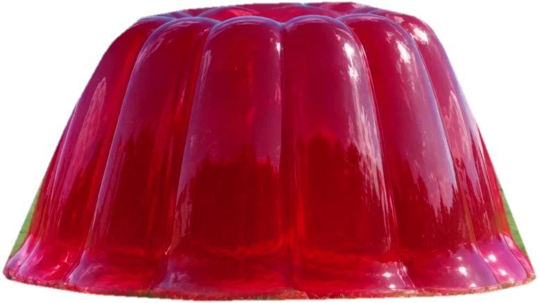
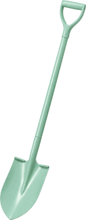

Jumbo Jelly in Yard
Jumbo Jelly in Yard는 익숙한 풍경에 예상 밖의 상상을 더하는 디자인 스튜디오입니다. 잔디밭 한가운데 떨어진 거대한 젤리처럼, 일상에 낯설고 흥미로운 장면을 만듭니다.
디자이너 장지윤의 이니셜 JJY에서 시작한 이름에는 크게 펼치는 상상(Jumbo), 유연한 생각(Jelly), 자유롭게 실험하는 공간(Yard)이라는 의미를 담았습니다. 브랜딩과 그래픽, 사진을 오가며 작은 아이디어를 키우고, 머릿속의 상상을 눈앞의 장면으로 옮깁니다.
Jang Jiyoon (장지윤)
2003.11.08
instagram → @zyoouip / @zyoouie
Mail → jumbojellyinyard@gmail.com
또 놀러 오세요!
함께할 일이 있다면 옆에 적힌 주소로
편하게 연락 주세요.
